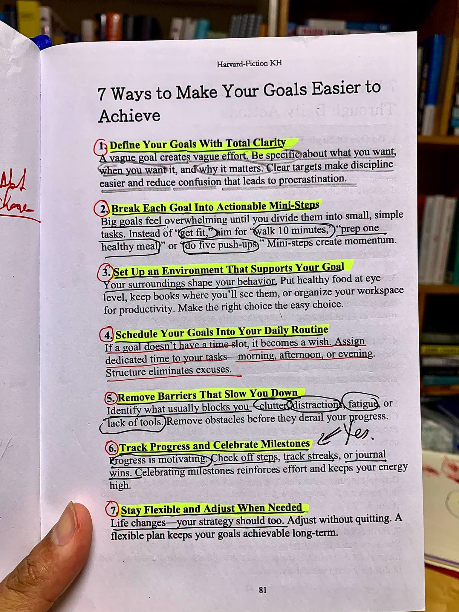

Langit di atas langit Ciumbuleuit meluruhkan warna aprikot yang basah. Gerimis tipis baru saja menyapu hawa panas Kota Bandung, menyisakan petrichor yang lekat dan kabut lembut yang turun perlahan dari arah utara. Di sudut sebuah kedai kopi berlantai dua dengan dinding kaca penuh embun, tiga anak muda duduk melingkari meja kayu pinus yang ringkih. Di hadapan mereka, tiga layar laptop menyala terang, memantulkan binar cahaya pucat pada wajah-wajah yang didera kelelahan hebat.
Mereka adalah Kinar, Senja, dan Bara. Tiga anak muda cerdas yang beberapa bulan lalu lulus dengan predikat kehormatan dari institut teknologi terbaik di kota ini. Hubungan mereka bukan sekadar pertemanan kampus biasa; mereka diikat oleh sebuah mimpi besar bernama Aethel—sebuah platform berbasis kecerdasan buatan yang dirancang untuk mendeteksi dini indikasi depresi dan gangguan kecemasan melalui analisis intonasi serta pola jeda suara manusia. Sebuah ide yang brilian, namun sayangnya, setelah enam bulan berjalan, proyek itu jalan di tempat. Mereka terjebak dalam pusaran diskusi tanpa akhir, revisi kode yang serampangan, dan frustrasi yang perlahan menggerogoti kewarasan.
Kinar menghempaskan tubuhnya ke sandaran kursi besi, menutup wajahnya dengan kedua telapak tangan yang dingin. Sebagai perancang antarmuka (UI/UX) yang perfeksionis, ia merasa telah kehilangan kompas. "Kita ini sebenarnya mau membangun apa?" suaranya meredam di balik jemarinya. "Minggu lalu kita sepakat membuat aplikasi jurnal personal. Dua hari lalu, kita berdebat ingin menjadikannya media sosial berbasis dukungan psikologis. Hari ini, kita malah membahas integrasi dengan klinik medis profesional. Semuanya buram. Aku lelah menggambar ulang kanvas yang dasarnya saja tidak pernah kita sepakati."
Bara, sang insinyur perangkat lunak utama, menghela napas panjang. Ia menyingkirkan cangkir Americano-nya yang sudah dingin. Alih-alih menyentuh keyboard, ia merogoh tas ranselnya dan mengeluarkan sebuah buku catatan kecil bergaris. Halamannya penuh dengan coretan tinta merah dan stabilo kuning neon—lembaran ringkasan dari buku pengembangan diri yang ia bedah semalam suntuk.
"Masalah kita bukan karena kita kurang pintar atau kurang bekerja keras," kata Bara dengan nada rendah namun penuh penekanan. Ia membalik halaman buku itu dan menunjuk baris pertama yang digarisbawahi tebal: 1. Define Your Goals With Total Clarity. "Sebuah tujuan yang samar hanya akan melahirkan usaha yang samar pula. Kita terlalu serakah ingin menyelesaikan semua masalah kesehatan mental di dunia dalam satu kali peluncuran. Kita harus spesifik tentang apa yang kita inginkan, kapan kita menginginkannya, dan mengapa hal itu sangat penting."
Senja, sang ahli data sains yang sejak tadi hanya menatap barisan matriks di layarnya dengan mata redup, perlahan mengangkat wajahnya. "Lalu, apa kejelasan yang kamu tawarkan, Bar?"
Bara menatap kedua temannya lekat-lekat. "Kita pangkas semuanya. Tujuan kita dari sekarang sampai akhir bulan ini hanya satu: membangun sebuah purwarupa fungsional yang mampu mendeteksi tingkat stres akut hanya berdasarkan durasi jeda bicara pengguna saat membaca satu paragraf teks teks standar. Targetnya jelas, batas waktunya jelas, fungsinya jelas. Hancurkan kebingungan yang memicu penundaan ini."
Malam berikutnya, mereka berpindah ke kamar kos Senja di daerah Cisitu. Kamar itu mencerminkan isi kepala penghuninya: tumpukan buku kalkulus tingkat lanjut, kertas grafik yang berserakan, dan aroma kopi saset yang pekat. Di luar jendela, kerlap-kerlip lampu Kota Bandung terhampar seperti hamparan berlian yang diserakkan di atas beludru hitam.
Bara menarik sebuah papan tulis putih kecil ke tengah ruangan. "Tujuan besar kita untuk akhir bulan masih terasa mengerikan kalau kita lihat secara utuh," ujarnya sambil menuliskan kata 'Purwarupa Aethel' di puncak bagan. Ia menoleh ke arah Senja dan Kinar, lalu menerapkan prinsip kedua yang ia pelajari: 2. Break Each Goal Into Actionable Mini-Steps.
"Jangan bayangkan sistem kecerdasan buatan yang utuh dulu, Senja. Itu membuatmu tertekan dan akhirnya malah tidak menyentuh kode sama sekali. Tugasmu untuk besok pagi pukul delapan hanya satu: bersihkan dan normalisasi seratus sampel audio pertama dari dataset publik. Hanya seratus. Jangan lebih." Bara menarik garis panah di papan tulis. "Dan untukmu, Kinar, tugasmu besok bukan mendesain seluruh aplikasi, melainkan hanya membuat sketsa kasar hitam-putih untuk satu layar perekaman suara di atas kertas."
Senja menatap kotak kecil berisi tugasnya di papan tulis. Sesuatu yang tadinya terasa seperti gunung batu yang mustahil didaki, kini pecah menjadi kerikil-kerikil kecil yang bisa ia kantongi. "Langkah kecil menciptakan momentum," bisik Senja pada dirinya sendiri, merasakan denyut semangat yang telah lama hilang kembali berdesir di dadanya.
Meskipun tugas-tugas telah dipecah menjadi bagian-bagian mikro, hari ketiga tidak berjalan seideal yang dibayangkan. Senja berulang kali terdistraksi oleh tumpukan cucian dan kasur empuknya yang hanya berjarak dua langkah dari meja kerja. Sementara Kinar terus-menerus membuka ponselnya, terjebak dalam labirin media sosial setiap kali ia menemui jalan buntu dalam estetikanya.
"Kamar ini terlalu nyaman untuk beristirahat, tapi terlalu menyesakkan untuk berpikir jernih," aku Senja dengan jujur ketika sore hari tiba dan progresnya masih minim. Kinar menyetujui hal itu. Ia teringat aturan ketiga: 3. Set Up an Environment That Supports Your Goal. Lingkungan di sekitar mereka secara tidak sadar membentuk perilaku destruktif.
Tanpa membuang waktu, Kinar mengajak mereka melakukan revolusi ruang. Mereka mengemas ransel dan menyewa tiga meja di sebuah ruang kerja bersama (co-working space) di kawasan Braga yang memiliki arsitektur kolonial dengan jendela-jendela kaca raksasa menghadap ke jalan raya yang dinamis. Ruangan itu terang benderang oleh cahaya matahari pagi, dipenuhi oleh orang-orang yang juga tengah mengetik dengan serius.
Mereka menyingkirkan semua camilan manis yang membuat kantuk, menyusun gawai dalam mode senyap di dalam tas, dan hanya menyisakan laptop serta botol air mineral di atas meja. Perubahan itu instan. Melihat energi produktif di sekitar mereka, atmosfer malas menguap. Lingkungan baru yang bersih dan terstruktur memaksa pikiran mereka untuk fokus sepenuhnya pada baris-baris kode dan elemen visual proyek mereka.
Memasuki minggu kedua, ritme kerja mereka mulai goyah akibat jam tidur yang kacau. Senja sering kali baru mendapatkan inspirasi coding pada pukul dua dini hari dan tidur hingga siang, sementara Kinar bekerja dengan pola sporadis yang membuat koordinasi tim menjadi berantakan.
Bara menyadari bahwa motivasi dan lingkungan yang baik saja tidak akan bertahan lama tanpa adanya jangkar rutinitas. "Jika sebuah tugas tidak memiliki slot waktu yang pasti di dalam kalender, maka tugas itu selamanya hanya akan menjadi sebuah keinginan," tegas Bara dalam rapat evaluasi hari Senin. Ia mengeluarkan aplikasi kalender digital bersama dan membagikan undangan jadwal harian yang ketat—sebuah penerapan dari aturan: 4. Schedule Your Goals Into Your Daily Routine.
Ia membagi hari menjadi tiga blok waktu yang tidak bisa diganggu gugat. Pukul 08.00 hingga 12.00 adalah waktu untuk Deep Work—fokus penuh pada tugas masing-masing tanpa ada rapat atau diskusi. Pukul 13.00 hingga 15.00 dialokasikan untuk sinkronisasi kode dan desain. Pukul 16.00 hingga 17.00 adalah waktu evaluasi akhir sebelum pulang. Struktur ini awalnya terasa mengekang bagi Kinar yang berjiwa bebas, namun dalam tiga hari, ia menyadari bahwa struktur inilah yang melindunginya dari rasa bersalah akibat manajemen waktu yang buruk. Kebebasan sejati ternyata ditemukan di dalam batasan yang disiplin.
Pertengahan minggu kedua, badai yang sesungguhnya menghantam tim mereka. Algoritma ekstraksi fitur suara yang ditulis oleh Senja terus-menerus mengalami crash saat membaca data uji coba. Kegagalan berulang itu puncaknya membuat Senja meledak ketika Bara menanyakan progresnya dengan nada yang agak mendesak. Senja membanting buku catatannya, menutup laptopnya dengan keras, dan air mata mulai membanjiri pipinya yang pucat. Ia berlari keluar menuju area balkon terbuka di lantai atas.
Kinar segera menyusul, meninggalkan Bara yang terpaku di mejanya. Di bawah langit Bandung yang mendung dan berangin kencang, Senja akhirnya menumpahkan segalanya. Masalahnya bukan sekadar kode yang error. Selama sebulan terakhir, ibunya di kampung halaman sedang sakit keras, dan sebagai anak sulung, beban finansial serta ketakutan kehilangan terus menghantuinya setiap malam. Kelelahan emosional inilah yang menjadi batu sandungan besar yang tak terlihat. 5. Remove Barriers That Slow You Down.
"Kita tidak bisa melangkah maju kalau salah satu dari kita membawa duri di kakinya," kata Kinar lembut, memeluk bahu Senja yang bergetar. Sore itu, atas kesepakatan bersama, seluruh aktivitas coding dan desain dihentikan total. Bara meminta maaf atas ketidaksigapannya membaca situasi emosional tim. Mereka membawa Senja berkendara naik ke daerah Dago Pakar, memesan sekotak jagung bakar dan wedang ronde hangat, membiarkan angin pegunungan menyapu sisa-sisa kesedihan. Mereka menyelesaikan hambatan mental dan emosional terlebih dahulu, karena mereka tahu, fondasi dari sebuah teknologi cerdas adalah manusia yang sehat di belakangnya.
Setelah hambatan emosional disingkirkan dan Senja mendapatkan ketenangan setelah keluarganya mendapat penanganan yang lebih baik, produktivitas melesat bak anak panah yang lepas dari busurnya. Tanggal dua puluh delapan malam, keajaiban kecil itu terjadi di dalam ruang kerja mereka yang sunyi.
Senja menekan tombol enter untuk menjalankan skrip pengujian terakhir pada lima puluh sampel suara baru yang belum pernah dikenali oleh sistem sebelumnya. Layar terminal berkedip lambat, lalu memunculkan baris teks berwarna hijau terang: *Accuracy Rate: 87.4%*. Sistem berhasil mengenali indikasi stres akustik dengan presisi tinggi.
"Kita berhasil," bisik Senja, hampir tidak percaya dengan apa yang tertera di layarnya.
Bara tidak menyembunyikan kegembiraannya. Ia beranjak dari kursinya, pergi ke lantai dasar, dan kembali dengan membawa dua kotak martabak manis legendaris Kota Bandung dan beberapa botol minuman soda dingin. Ini adalah perayaan atas aturan: 6. Track Progress and Celebrate Milestones. "Progres adalah bahan bakar motivasi terbaik," kata Bara sambil mengangkat botol sodanya tinggi-tinggi. Mereka merayakan malam itu bukan karena mereka sudah menjadi perusahaan bernilai miliaran, melainkan karena mereka telah berhasil menepati janji pada diri mereka sendiri untuk menyelesaikan satu purwarupa fungsional tepat waktu. Pengakuan atas kemenangan kecil ini memulihkan seluruh energi mereka yang sempat terkuras habis.
Hari penentuan tiba di awal bulan berikutnya. Mereka mendapat kesempatan mempresentasikan purwarupa Aethel di hadapan dewan juri dan investor potensial dalam sebuah acara inkubator teknologi di Jalan Asia Afrika. Kinar membawakan presentasi dengan visual yang sangat memukau, sementara Bara mendemonstrasikan kestabilan sistem dengan lancar.
Namun, saat sesi tanya jawab dibuka, seorang juri senior yang merupakan praktisi hukum medis memberikan hantaman keras. "Ide kalian bagus, tapi regulasi privasi data medis untuk algoritma diagnostik psikologis di negara ini sangat ketat dan membutuhkan waktu verifikasi klinis hingga bertahun-tahun. Produk kalian akan mati di tangan birokrasi sebelum sempat digunakan oleh masyarakat umum."
Ruangan mendadak hening. Wajah Kinar memucat seketika, dan tubuh Bara menegang. Proyek enam bulan mereka terancam runtuh dalam hitungan detik karena sebuah tembok regulasi. Namun, di saat kritis itu, Senja mengingat prinsip terakhir yang tertulis di buku catatan Bara: 7. Stay Flexible and Adjust When Needed. Rencana awal boleh patah, namun tujuan besar tidak boleh mati. Strategi harus meliuk fleksibel seperti bambu yang diterjang angin.
Senja menarik mikrofon di depannya, menatap juri dengan pandangan mata yang tenang namun tajam. "Terima kasih atas masukannya, Pak. Dan karena itulah, kami tidak akan memosisikan Aethel sebagai alat diagnosis medis formal," ujar Senja dengan percaya diri. "Kami akan mengubah arah implementasinya menjadi sebuah alat integrasi (API) untuk platform pusat layanan pelanggan (Customer Service) perusahaan besar. Sistem kami akan mendeteksi tingkat stres atau frustrasi pelanggan dari nada suara mereka secara real-time, sehingga sistem dapat langsung mengalihkan panggilan tersebut ke agen manusia yang memiliki tingkat empati tertinggi, bukan ke robot penjawab otomatis. Dengan begitu, kami tidak melanggar regulasi medis, melainkan menyelesaikan masalah retensi pelanggan industri."
Juri tersebut terdiam, menatap Senja selama beberapa detik, sebelum akhirnya perlahan-lahan menyunggingkan senyuman lebar dan mengangguk puas. Riuh tepuk tangan menggema di dalam aula.
Sore harinya, mereka bertiga berjalan kaki menyusuri trotoar batu di sepanjang Jalan Asia Afrika. Langit Bandung setelah hujan tampak begitu bersih, memantulkan cahaya lampu-lampu jalan bergaya klasik di atas permukaan aspal yang basah. Udara dingin merayap masuk ke dalam jaket mereka, namun di dalam dada mereka masing-masing, ada kehangatan yang menyala penuh.
Mereka telah belajar bahwa untuk mencapai sebuah impian besar di kota yang romantis ini, mereka tidak bisa hanya mengandalkan kejeniusan dan angan-angan yang melambung tinggi. Mereka membutuhkan struktur, kejelasan target, lingkungan yang sehat, ketabahan untuk menyingkirkan hambatan emosional, dan kelenturan jiwa untuk menari bersama ketidakpastian. Tujuh fajar telah membentuk mereka menjadi manusia yang baru—siap menjemput fajar-fajar berikutnya dengan keyakinan yang penuh dan terukur.